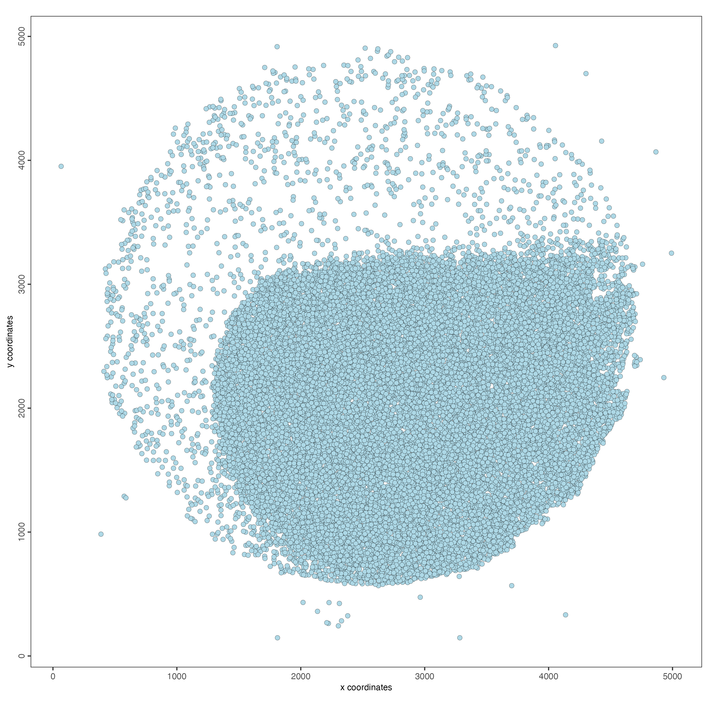
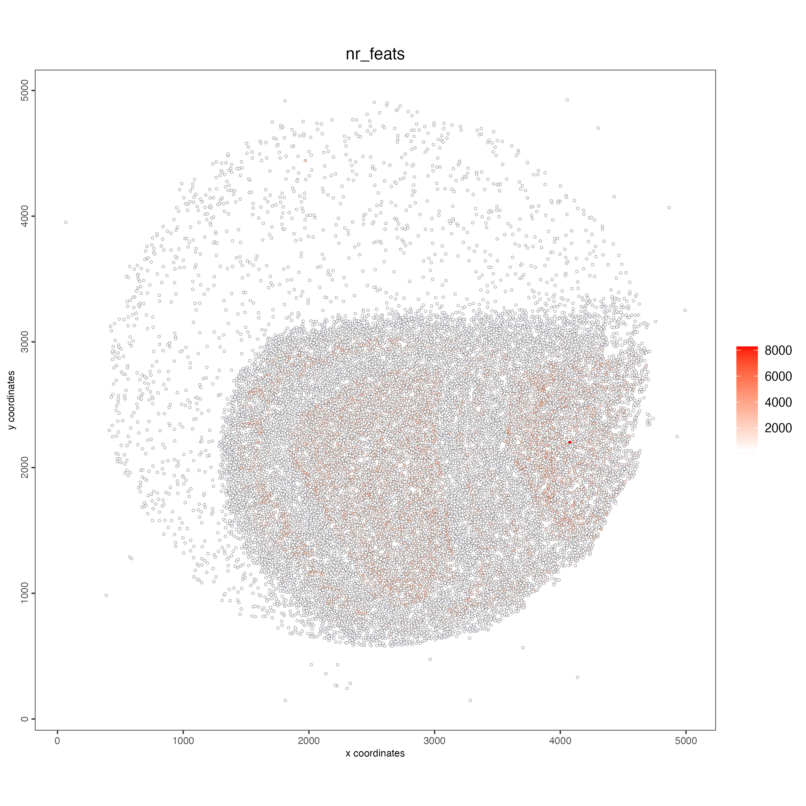
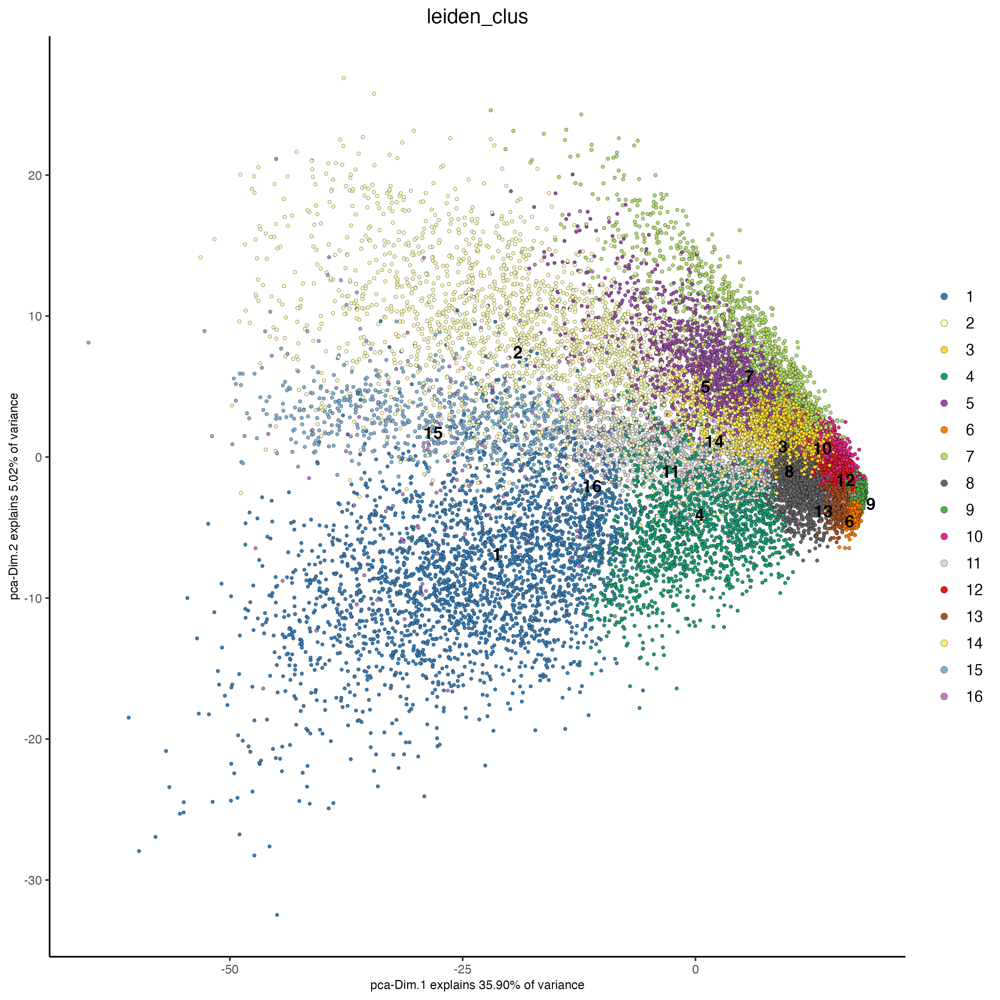
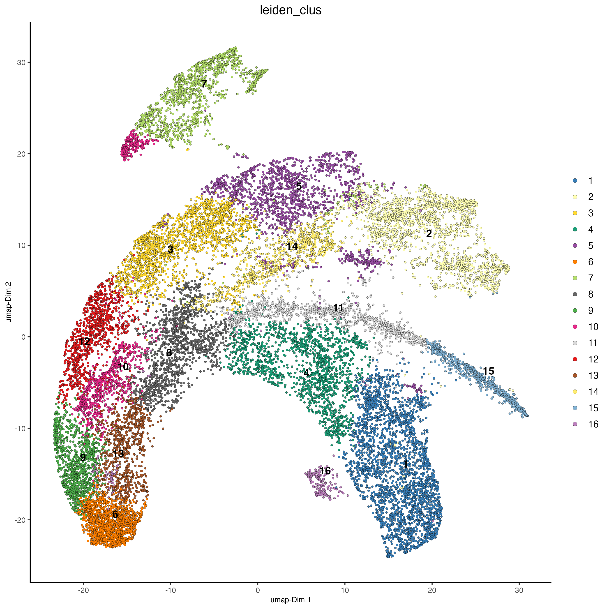
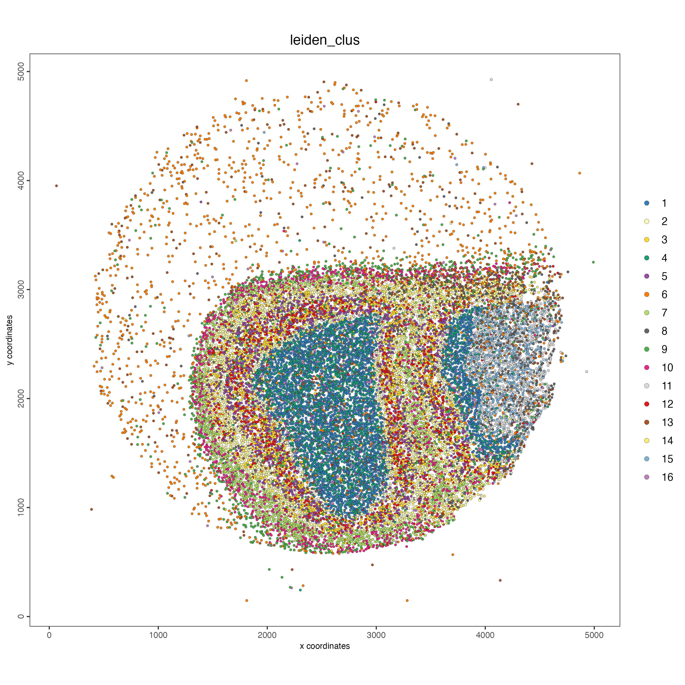

This dataset was deposited in the NeMO database by the Macosko lab under the grant rf1_macosko. It belongs to a mouse brain, processed and sequenced using the Slide-seq technology.
To download the data, run the following code:
# Provide path to the data folder
data_path <- "/path/to/data/"
download.file(url = "https://data.nemoarchive.org/biccn/grant/rf1_macosko/macosko/spatial_transcriptome/cellgroup/Slide-seq/mouse/processed/counts/2020-12-19_Puck_201112_26.matched.digital_expression.mex.tar.gz",
destfile = file.path(data_path, "2020-12-19_Puck_201112_26.matched.digital_expression.mex.tar.gz"))
download.file(url = "https://data.nemoarchive.org/biccn/grant/rf1_macosko/macosko/spatial_transcriptome/cellgroup/Slide-seq/mouse/processed/other/2020-12-19_Puck_201112_26.BeadLocationsForR.csv.tar",
destfile = file.path(data_path, "2020-12-19_Puck_201112_26.BeadLocationsForR.csv.tar"))
# Ensure Giotto Suite is installed
if(!"Giotto" %in% installed.packages()) {
pak::pkg_install("drieslab/Giotto")
}
# Ensure the Python environment for Giotto has been installed
genv_exists <- Giotto::checkGiottoEnvironment()
if(!genv_exists){
# The following command need only be run once to install the Giotto environment
Giotto::installGiottoEnvironment()
}
library(Giotto)
# 1. set results directory
results_folder <- "/path/to/results/"
# 2. set giotto python path
# set python path to your preferred python version path
# set python path to NULL if you want to automatically install (only the 1st time) and use the giotto miniconda environment
python_path <- NULL
# 3. create giotto instructions
instructions <- createGiottoInstructions(save_dir = results_folder,
save_plot = TRUE,
show_plot = FALSE,
return_plot = FALSE,
python_path = python_path)
expression_matrix <- get10Xmatrix(file.path(data_path, "2020-12-19_Puck_201112_26.matched.digital_expression"))
spatial_locs <- data.table::fread(file.path(data_path, "2020-12-19_Puck_201112_26.BeadLocationsForR.csv.tar"))
spatial_locs <- spatial_locs[spatial_locs$barcodes %in% colnames(expression_matrix),]
giotto_object <- createGiottoObject(
expression = expression_matrix,
spatial_locs = spatial_locs,
instructions = instructions
)
spatPlot2D(giotto_object,
point_size = 2)
giotto_object <- filterGiotto(giotto_object,
min_det_feats_per_cell = 10,
feat_det_in_min_cells = 10)
giotto_object <- normalizeGiotto(giotto_object)
giotto_object <- addStatistics(giotto_object)
spatPlot2D(giotto_object,
cell_color = "nr_feats",
color_as_factor = FALSE,
point_size = 1)
giotto_object <- runUMAP(giotto_object,
dimensions_to_use = 1:10)
giotto_object <- createNearestNetwork(giotto_object)
giotto_object <- doLeidenCluster(giotto_object,
resolution = 1)
plotPCA(giotto_object,
cell_color = "leiden_clus",
point_size = 1)
plotUMAP(giotto_object,
cell_color = "leiden_clus",
point_size = 1)
spatPlot2D(giotto_object,
cell_color = "leiden_clus",
point_size = 1)